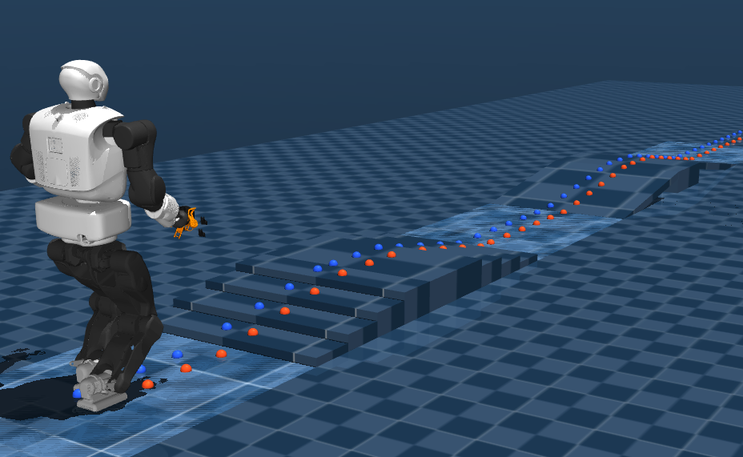
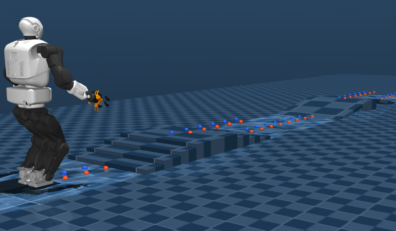
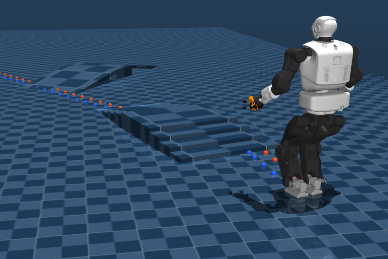

Robotics & Control
Talos Terrain-Adaptive Walking
A terrain-aware locomotion pipeline that enables the Talos humanoid to plan footsteps, replan online, and walk across uneven obstacle tracks in MuJoCo.
Apr — Jul 2026ROS 2 · MuJoCo · MPC · TSID



Overview
The system combines terrain-aware footstep generation, a linear inverted pendulum model predictive controller, and task-space inverse dynamics. Each level introduces more uncertainty, progressing from a known one-dimensional track to online two-dimensional replanning.
Highlights
- Online terrain sensing and replanning
- Yaw-aware 2-D footstep placement
- Stable whole-body tracking in simulation